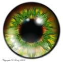

| inicio | | | | | @ | ||
Puntas de estrella
La estrella de David, o de la Casa de Israel, tiene seis puntas. Resulta de la unión de dos triángulos, antiguos símbolos alquimistas que representan elementos opuestos y complementarios, como el aire que aviva el fuego y seca la tierra, o como el agua que apaga uno y fertiliza la otra.
La estrella pitagórica tiene cinco puntas, símbolo esotérico que también ilustra teoremas. Las estrellas que lucen en su chaleco los comisarios de los condados en los Estados Unidos de América tienen cinco, seis o siete puntas, según las localidades; y las que señalan los rangos militares y categorías de hoteles suelen ser todas de cinco puntas.
Pero ¿cuántas puntas tiene una estrella de verdad? Ninguna en absoluto; las estrellas son esferas muy regulares. Sin embargo, y desde muy antiguo, siempre se las dibuja con puntas.
Eso se debe a la forma del diafragma iris del ojo, que se parece a la boca de una bolsa marinera, por cuyo dobladillo pasa un cordón que la frunce y la cierra cuando se tira. Igualmente, tenemos un músculo esfínter que frunce la abertura del ojo y regula la luz. La luz se refleja y se difracta en cada protuberancia grande del fruncido, y genera sobre la retina un trazo radial que vemos como punta.
Así, el dibujo de una estrella da más información sobre el ojo del observador que sobre el objeto astronómico.
Y así ocurre en toda observación que se realice: su resultado da poca información sobre el objeto, mucha sobre el instrumento empleado para observar, y más datos aun nos ofrece sobre el observador que emplea dicho instrumento, y hasta sobre la sociedad y a la época en que vivió.
No sabemos cómo son las estrellas, las economías ni la historia, pero los trabajos de los astrónomos, economistas e historiadores nos brindan muchos datos sobre su propia estructura de pensamiento.

| Publicado originalmente en http://www.elistas.net/lista/divagaciones/archivo/indice/1/msg/18/. Se permite su reproducción citando la fuente. Última actualización nov-2017. Buenos Aires, Argentina. |